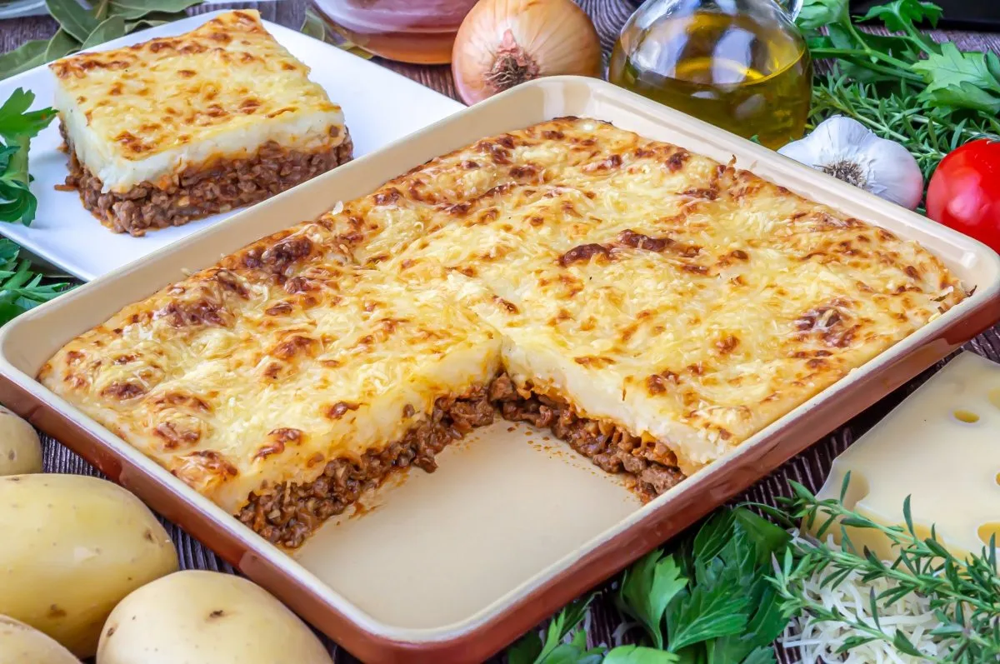

Hola profe, le entrego mi tarea: receta para hacer un pastel de papa común Argentino (con algunos chistes mios)
Materiales
1kg. de papa
1/2kg. de carne picada
1 cebolla
1 ajo
1/2 morrón
1 caldito a elección
Pimentón
25g. de manteca
Un poco de leche
Nuez moscada
Aceite
Sal
Pimienta
una vez con estas cosas obligatorias, te recomiendo conseguir algo para acompañar el relleno de tu gusto, como aceitunas
Pasos
Cortar las papas en cubos y ponerlas a hervir con sal.
Picar la cebolla, el ajo y el morrón.
Calentar el aceite en una olla o sartén y sofreir la cebolla, ajo y morrón.
Cuando la cebolla esté trasparente, agregar la carne y sofreirla mientras la deshace con una cuchara
Salpimentar, agregar caldito, pimentón y dejar cocer la carne por 15 MIN.
Una vez que las patatas estén hervidas, hacer en caliente un puré con la manteca y la leche. Salpimentar.
Poner en una fuente para horno una base de puré, agregar por encima la carne (dejar que se entibie un poco) y colocar otra capa de puré. Para distribuirlo, se moja la cuchara con agua fría.
Llevar a horno fuerte o gratinador unos 15-20 min. o hasta que la parte de arriba esté crocante.
Puede agregarse al relleno de carne un huevo picado o, mi recomendación personal, muchas aceitunas

Restaurante recomendado
¿nunca probaste un pastel de papas? te dejo esta demostracion de Tatatito, la pareja de Robleis.